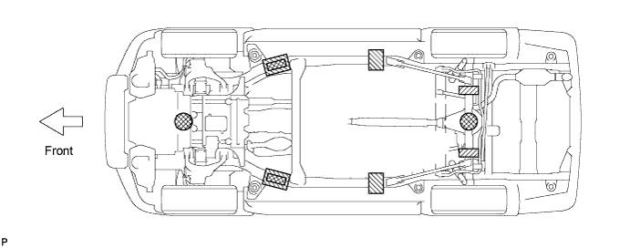
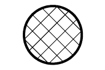
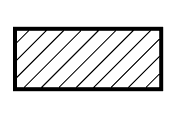
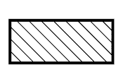

REPAIR INSTRUCTION > VEHICLE LIFT AND SUPPORT LOCATIONS |
| NOTICE ABOUT VEHICLE CONDITION WHEN JACKING UP VEHICLE |
The vehicle must be unloaded before jacking up / lifting up the vehicle. Never jack up / lift up a heavily loaded vehicle.
When removing heavy parts such as the engine and transmission, the center of gravity of the vehicle may shift. To stabilize the vehicle, place a balance weight in a location where it will not roll or shift, or use a mission jack to hold the jacking support.
| NOTICE FOR USING 4 POST LIFT |
Follow the safety procedures outlined in the lift's instruction manual.
Use precautionary measures to prevent the free wheel beam from damaging tires or wheels.
Use wheel chocks to secure the vehicle.
| NOTICE FOR USING JACK AND SAFETY STAND |
Work on a level surface. Use wheel chocks at all times.
Use safety stands with rubber attachments as shown in the illustration.
Set the jack and safety stands to the specified locations of the vehicle accurately.
When jacking up the vehicle, first release the parking brake and move the shift lever to N.
When jacking up the entire vehicle:
When jacking up the front wheels first, make sure wheel chocks are behind the rear wheels.
When jacking up the rear wheels first, make sure wheel chocks are in front of the front wheels.
When jacking up only the front or rear wheels of the vehicle:
Before jacking up the front wheels, place wheel chocks on both sides of the rear wheels.
Before jacking up the rear wheels, place wheel chocks on both sides of the front wheels.
When lowering a vehicle that only has its front or rear wheels jacked up:
Before lowering the front wheels, make sure wheel chocks are in front of the rear wheels.
Before lowering the rear wheels, make sure wheel chocks are behind the front wheels.

 |
|
|
 |
| - |
 |
| - |
It is extremely dangerous to perform any work on a vehicle raised on a jack alone, even for work that can be finished quickly. Safety stands must be used to support the vehicle.